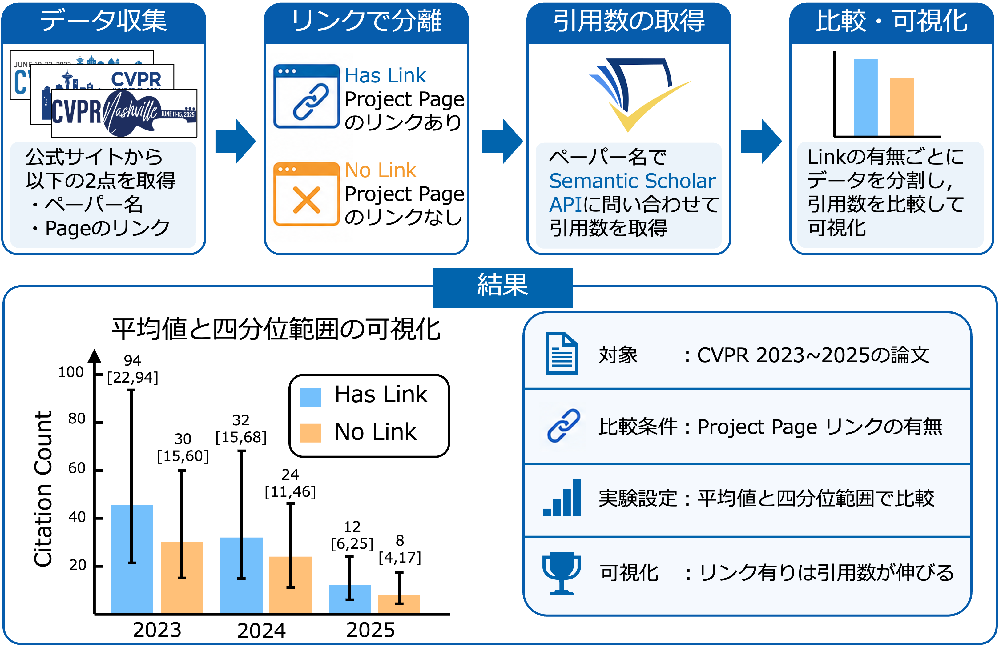

わかりやすいプロジェクトページを求めて
概要
よい研究も，その魅力が伝わらなければ多くの人には届きません．論文やコードとあわせて公開される「プロジェクトページ」は，研究成果を広く届けるための重要な入口です．一方で，どのようなページが研究の認知や理解につながるのかは，十分に整理されていません．
本プロジェクトでは，CVPR 2023–2025の論文を対象に，プロジェクトページの公開と引用数の関係，AIによる自動評価と人間の主観評価の関係，そして「わかりやすさ」を左右するデザイン要因を調査しました．その結果，ページを公開している論文は引用数が高い傾向にあり，単に情報を多く載せることよりも，動画や図，レイアウト，図と文章のバランスを工夫することが重要だと分かりました．
引用数
Project Pageの公開が研究の認知に貢献するかを検証するため，引用数を尺度としてProject Pageの有無による差を比較した． CVPRの3年間の論文を対象に各論文の引用数とProject Pageの有無を収集し，各年度の引用数の中央値および四分位範囲を可視化した． 3年分の結果によりPPの公開が引用数向上に貢献する結果が得られた

Paper2Web
Paper2Web に関する説明をここに記述してください。
定性評価
Project Page のわかりやすさに寄与するデザイン要因を明らかにするため，CVPR 2023–2025 の高被引用論文 75 本の PP を 6 名で精読し，"わかりやすさ" を左右する特徴を「第一印象」「操作性」「図と文の比率」「手法の伝達」の 4 観点に整理した． ここでは代表例として，CVPR 2025 に Oral として採択された論文 "Continuous 3D Perception Model with Persistent State"（CUT3R，Wang et al.）の PP を取り上げ，実際に公開されている PP（A. Original），Paper2Web による自動生成例（B. Paper2Web），悪い PP の特徴をもとに Claude Code で生成した例（C. Bad example）を 4 観点で比較する．
例ははじめ 5 秒ごとに自動で切り替わり，枠内に触れる・タップする・◀ ▶ 等を操作すると自動切り替えは停止します／3 例とも実物のページを枠内に埋め込んでおり，デモなどの操作はそのまま可能です（別ページへのリンクは無効化しています．右上の ⟳ で埋め込みを初期状態に戻せます）
3 例の比較から，同じ論文であっても PP の設計次第で伝わりやすさが大きく変わることが確認できた．冒頭の動画と触れるデモを備えた A. Original に対し，B. Paper2Web は体裁こそ整っているものの図が少なく解説が冗長で，C. Bad example は文字のみで内容の判読が困難であった．
以上より，冒頭で内容が伝わる第一印象，動かして確かめられる操作性，図で見せる図と文章のバランスが，わかりやすい PP の条件として重要である．PP は論文では示せない動画や補足情報を発信できる媒体であり，こうした特性を活かした設計が研究の理解促進に寄与すると考えられる．
（参照: Q. Wang et al., "Continuous 3D Perception Model with Persistent State," CVPR 2025. https://cut3r.github.io/）
Poster
謝辞
本研究はMIRU2026 若手プログラムにおける活動の一環として行われました．また，本プログラムを通してメンターとしてご指導いただいた上田栞さんに深く感謝いたします．
BibTeX
@inproceedings{arimura2026yourpaper,
title = {Your Paper Title Here},
author = {Arimura, Yukitoshi and
Oumi, Yusuke and
Konno, Tsubasa and
Sugaya, Tomoki and
Takezaki, Jumpei and
Yamamoto, Riku},
booktitle = {MIRU},
year = {2026}
}